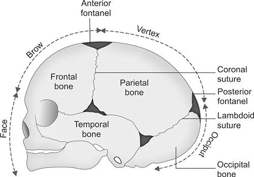

Expanded Nursing Uganda Explanation
Fetal skull should be reviewed through safe maternal and newborn assessment, early recognition of danger signs, respectful communication and timely referral. Connect the definition to vital signs, bleeding, fetal or newborn wellbeing, patient education and local protocol requirements.
Contents, 15 sections (tap to expand)
01 THE FETAL SKULL
The fetal skull is a bony compartment forming the head, containing the vital brain, which is susceptible to injury during delivery .
The fetal head’s presentation during normal labor is important; its successful delivery facilitates the delivery of the rest of the body.
Fetal skull is to some extent compressible and made mainly of thin pliable tabular (flat) bones forming the vault. This is anchored to the rigid and incompressible bones at the base of the skull.
Divisions of the Fetal Head:
- Face : Composed of 14 bones developing from cartilage. These bones are nearly fully ossified at birth, fused, and firm, protecting the brain. The face extends from the orbital ridges to the chin-neck junction.
- Base : Firmly united bones protecting vital centers. Five in number, they develop from cartilage and are fully ossified at birth.
- Vault : The area above an imaginary line from the nape of the neck to the orbital ridges. This is the largest part of the head and typically the first to pass through the birth canal. These bones develop from membranes.
Fetal skull showing different regions and landmarks of obstetrical significance
Sinciput is the area lying in front of the anterior fontanel and corresponds to the area of brow and the occiput is limited to the occipital bone. Flat bones of the vault are united together by non-ossified membranes attached to the margins of the bones. These are called sutures and fontanels . Of the many sutures and fontanels, the following are of obstetric significance.
02 Bones of the Vault of the Fetal Skull:
The bony structure of the vault originates within a membrane framework. Over time, a process known as ossification hardens these structures from the center outward.
At birth, ossification remains incomplete, resulting in small gaps existing between the bones referred to as sutures and fontanelles . Each bone features a distinct ossification center, which appears as a noticeable protrusion. The full ossification of the skull takes place only in early adulthood.
The vault’s bony composition encompasses:
(i) Two Frontal Bones : Form the forehead (sinciput). Each has an ossification center (frontal eminence). They are square and fuse into a single bone by age 8.
(ii) Two Parietal Bones : Lie on either side of the skull. Each has an ossification center (parietal eminence). They are rectangular.
(iii) Occipital Bone : Lies at the back of the head; part contributes to the skull base, containing the foramen magnum (protecting the spinal cord). It is triangular, with the occipital protuberance as its ossification center.
(iv) Upper segment of the Temporal Bones (both sides): Contribute to the vault( on both sides of the head participates in forming the vault’s structure.)
Development of the Vault:
Five ossification centers develop in the membranes, with calcium deposition (ossification). Chondrocytes contribute to membrane formation. Ossification centers form prominences like frontal bosses, parietal eminences, and the occipital protuberance.
Clinical Notes:
- Premature Infants: Bones are not fully ossified, leaving membranous spaces. This lack of support increases the risk of intracranial injury at birth.
- Full-Term Infants : Narrow areas remain due to incomplete ossification, allowing for molding (overlapping) during labor to facilitate passage through the pelvis.
- Post-Mature Infants: Further ossification leads to harder bones and narrower spaces, hindering molding and making delivery more difficult, with an increased risk of intracranial injury.
03 Regions of the Fetal Skull:
The fetal skull’s various segments are defined by distinct regions, each marked by significant landmarks(see figure above). These points of reference hold particular importance for midwives during vaginal examinations, aiding in determining the fetal head’s position.
(i) Vertex : The area between the anterior fontanelle (front), posterior fontanelle (behind), and the two parietal eminences (laterally). 95% of babies are present in the vertex position.
(ii) Sinciput (Brow) : Extends from the anterior fontanelle and coronal suture to the orbital ridges.
(iii) Face : Extends from the orbital ridges and root of the nose to the chin-neck junction. The chin (mentum) is an important landmark; the face is small in newborns.
• Extending from the orbital ridges and the base of the nose to the junction of the chin, or mentum (landmark), and the neck is the face region . The point situated between the eyebrows is recognized as the glabella
(iv) Occiput : Lies between the foramen magnum and the posterior fontanelle. The area below the occipital protuberance (landmark) is referred to as the sub-occipital region . The protuberance is a prominent point on the skull’s posterior aspect.
04 SUTURES
Sutures : Membranous lines or cranial joints separating cranial bones. They allow for overlapping during labour.
Important Sutures in Obstetrics:
- Frontal (Metopic) Suture : Between the two frontal bone halves; it obliterates over time.
- Coronal Suture: Separates the frontal and parietal bones.
- Sagittal Suture : Between the two parietal bones.
- Lambdoid Suture : Separates the occipital and parietal bones.
- Squamous Suture : Separates the temporal and parietal bones.
Importance :
- It allows smooth movement of one bone over the other during head molding, which is significant as the head passes through the pelvis during labor.
- Palpating the sagittal suture during internal examination in labor provides insight into head engagement ( asynclitism or synclitism ), the degree of internal head rotation, and head molding.
05 FONTANELS
Fontanelles : Membranous spaces where sutures meet; they allow for moulding during labour.
A wide gap in the suture line is referred to as a fontanel. Among the numerous fontanels (total of 6), two hold obstetric significance: (1) Anterior fontanel or bregma and (2) Posterior fontanel or lambda.
Anterior fontanel : It results from the fusion of four sutures in the midline. The sutures include the frontal suture anteriorly, the sagittal suture posteriorly, and the coronal sutures on either side. Its shape resembles a diamond, with anteroposterior and transverse diameters of approximately 3 cm each. The floor consists of a membrane, which undergoes ossification around 18 months after birth. If ossification does not occur even after 24 months, it becomes pathological.
Importance :
- Palpating it during internal examination indicates the degree of head flexion.
- It aids in head molding.
- Due to its membranous nature persisting after birth, it accommodates significant brain growth, with the brain nearly doubling in size during the first year of life.
- Palpation of the floor reflects intracranial conditions – depressed in dehydration, elevated in raised intracranial pressure.
- In rare cases, blood collection and exchange transfusion can be performed through it, via the superior longitudinal sinus.
- Although uncommon, cerebrospinal fluid can be drawn through the angle of the anterior fontanel from the lateral ventricle.
Posterior fontanel : It is formed by junction of three suture lines, sagittal suture anteriorly and lambdoid suture on either side. It is triangular in shape and measures about 1.2 × 1.2 cm (1/2″ × 1/2″). Its floor is membranous but becomes bony at term. Thus, truly its nomenclature as fontanel is misnomer. It denotes the position of the head in relation to maternal pelvis.
Sagittal fontanel : It is inconsistent in its presence. When present, it is situated on the sagittal suture at the junction of anterior two-third and posterior one-third. It has got no clinical importance.
06 Diameters of the Fetal Skull:
The engaging diameter of the fetal skull depends on the degree of flexion present. The anteroposterior diameters of the head which may engage are:
- Presentation Diameter (cm) Attitude of the Head
- Vertex Suboccipitobregmatic, extends from the nape of the neck to the center of the bregma 9.5 Complete flexion
- Vertex Suboccipito-frontal, extends from the nape of the neck to the anterior end of the anterior fontanel or center of the sinciput 10 Incomplete flexion
- Vertex Occupitofrontal, extends from the occipital eminence to the root of the nose (Glabella) 11.5 Marked deflexion
- Brow Mento-vertical, extends from the midpoint of the chin to the highest point on the sagittal suture 13.5 Partial extension
- Face Submentovertical, extends from junction of floor of the mouth and neck to the highest point on the sagittal suture 11.5 Incomplete extension
- Face Submentobregmatic, extends from junction of floor of the mouth and neck to the center of the bregma 9.5 Complete extension
Diameters are classified as transverse and longitudinal:
(i) Transverse Diameters:
- Bi-Parietal : Between the two parietal eminences ( 9.5cm ).
- Bi-Temporal : Between the furthest points of the coronal suture and it measures 8.2cm
(ii) Longitudinal Diameters : These are measured from different points on the fetal skull and are important in determining the fetal head’s position and the ease of delivery.
- Suboccipito-Bregmatic : From a point below the occipital protuberance to the center of the anterior fontanelle ( 9.5cm ). This is often the smallest diameter and is favorable for vaginal delivery.
- Suboccipito-Frontal: From a point below the occipital protuberance to the center of the frontal suture ( 10cm ).
- Occipito-Frontal : From the occipital protuberance to the glabella (the smooth area between the eyebrows) ( 11.5cm ).
- Mentovertical : From the tip of the chin to the highest point on the vertex ( 13.5cm ). This is the longest diameter and presents in brow presentation, making vaginal delivery difficult or impossible.
- Submento-Bregmatic: From the junction of the chin and neck to the bregma ( 9.5cm ).
- Submento-Vertical : From the junction of the chin and neck to the highest point on the vertex ( 11.5cm ).
Summary of Diameters in Different Presentations
- Diameter Length Presentation
- Sub occipito-bregmatic 9.5cm Flexed vertex
- Submeto-brigmatic 9.5cm Face
- Suboccipital frontal 10.5cm Partially deflexed vertex
- Occipital-frontal 11.5cm Deflexed vertex
- Submento-vertical 11.5cm Face not fully flexed
- Mento-vertical 13.5-14 cm Brow
07 Transverse Diameters
The transverse diameters of the fetal skull;
There are also two transverse diameters, • The biparietal diameter (9.5 cm) – the diameter between the two parietal eminences. • The bitemporal diameter (8.2 cm) – the diameter between the two furthest points of the coronal suture at the temples.
Knowledge of the diameters of the trunk is also important for the birth of the shoulders and breech
- Bisacromial diameter 12 cm : This is the distance between the acromion processes on the two shoulder blades and is the dimension that needs to pass through the maternal pelvis for the shoulders to be born. The articulation of the clavicles on the sternum allows forward movement of the shoulders, which may reduce the diameter slightly.
- Bitrochanteric diameter 10 cm: This is measured between the greater trochanters of the femurs and is the presenting diameter in breech presentation.
08 ATTITUDE OF THE FETAL HEAD
The attitude of the fetal head refers to the degree of flexion or extension of the head relative to the fetal body .
This is a crucial factor influencing which diameter of the fetal skull presents during labor, impacting labor progression and outcome.
A well-flexed head presents smaller diameters , facilitating easier passage through the birth canal.
Conversely, an extended head presents larger diameter s, potentially leading to complications .
Presenting Diameters vs. Engaging Diameters:
The terminology used to describe fetal head diameters during labor needs clarification:
- Presenting Diameters : These are the diameters of the fetal skull that are initially oriented at right angles to the curve of Carus (the axis of the birth canal) before the head engages in the pelvis. They are important in determining the initial presentation and lie of the head.
- Engaging Diameters : These are the diameters that present after the head flexes and begins to descend into the pelvic brim. These are the diameters that actively distend the perineum during the second stage of labor. Both longitudinal and transverse diameters are considered engaging diameters.
09 Presenting/Engaging Diameters in Different Presentations:
Some presenting diameters are more favourable than others for easy passage through the maternal pelvis and this will depend on the attitude of the fetal head.
This term attitude is used to describe the degree of flexion or extension of the fetal head on the neck. The attitude of the head determines which diameters will present in labour and therefore influences the outcome. The presenting diameters of the head are those that are at right-angles to the curve of Carus of the maternal pelvis. There are always two: a longitudinal diameter and a transverse diameter. The presenting diameters determine the presentation of the fetal head, for which there are three:
The fetal head’s attitude directly determines which engaging diameters present during labor.
1. Vertex Presentation (Optimal) :
- When the head is well-flexed (chin tucked to chest), the suboccipito-bregmatic diameter (9.5cm) and the biparietal diameter (9.5cm) engage. Given their equal length, the presenting area takes on a circular form, optimally conducive to cervix dilation and successful head birth. This presents a nearly circular area with a circumference of approximately 29cm. This smaller circumference is highly favorable for cervical dilation and vaginal delivery, as it minimizes the forces required to navigate the birth canal.The sub-occipitofrontal diameter (10 cm) is the dimension that expands the vaginal orifice. Conversely, when the head is deflexed, the presenting diameters shift to the occipitofrontal (11.5 cm) and the biparietal (9.5 cm). This circumstance often arises when the occiput occupies a posterior position. In such cases, if the posterior position persists, the diameter expanding the vaginal orifice will be the occipitofrontal (11.5 cm).
2. Brow Presentation (Difficult) :
- In brow presentation, the head is partially extended (the brow presents). Partial extension of the head results in the mentovertical diameter (13.5 cm) and the bitemporal diameter (8.2 cm) becoming the presenting diameters. These diameters are significantly larger than those seen in vertex presentations. The circumference of the fetal head in this presentation is approximately 38cm. Due to these large diameters, engagement is often difficult or impossible, and vaginal delivery is usually not feasible. Cesarean section is often necessary.
3. Face Presentation (Challenging) :
- In face presentation, the head is completely extended (the face presents). The submento-bregmatic diameter (9.5cm) engages. While this diameter is relatively small, labor is still often difficult. This is because the bones of the face are less malleable (don’t mold as easily) compared to the vault bones of the skull. While vaginal delivery may be possible, it is often more challenging and may require assistance.
Summary:
The attitude of the fetal head is a critical factor impacting labor. Optimal flexion (vertex) leads to the presentation of smaller diameters, facilitating easier passage through the birth canal. Extension (brow and face presentations) presents larger diameters, significantly increasing the difficulty and risk of vaginal delivery. Understanding the relationships between fetal head attitude, presenting diameters, and the maternal pelvis is crucial for safe obstetrical management.
10 Examination of the Parts of the Fetal Skull
Task : Description of the sutures and fontanelles .
- To identify the sutures and fontanelles.
- To explain the importance of fontanelles.
Requirements :
- A flat surface
- A fetal skull
Procedure :
- Step Action Rationale
- 1 Hold the fetal skull with the To make it firm
- 2 With a pointer, show the longitudinal sutures i.e. Frontal or metopic suture and sagittal suture. Transverse sutures like coronal and Lambdoid where they start and stop. To view their location and demarcation
- 3 Tell the importance of the sutures that: 1. They permit a degree of moulding of fetal bones as the fetal head negotiates the pelvis. 2. They separate the cranial bones.
- 4 Clear way and record
11 MOULDING
The term moulding is used to describe the change in shape of the fetal head that takes place during its passage through the birth canal.
This is a physiological adaptation that aids in the process of delivery.
Alteration in shape is possible because the bones of the vault allow a slight degree of bending and the skull bones are able to override at the sutures. This overriding allows a considerable reduction in the size of the presenting diameters, while the diameter at right-angles to them is able to lengthen owing to the give of the skull bones(Fig. 7.13).
The shortening of the fetal head diameters may be by as much as 1.25 cm. The dotted lines in Figs 7.14–7.19 illustrate moulding in the various presentations. Additionally, moulding is a protective mechanism and prevents the fetal brain from being compressed as long as it is not excessive, too rapid or in an unfavourable direction. The skull of the pre-term infant is softer and has wider sutures than that of the term baby, and hence may mould excessively should labour occur prior to term.
The Process of Molding:
Moulding involves the overlapping of the fetal skull bones at their sutures. Specifically, the frontal bone is pushed under the anterior portion of the parietal bones , and the occipital bone is pushed under the posterior portion of the parietal bones. The two parietal bones also overlap each other. This allows for a decrease in the head’s overall diameter.
Principles of Molding:
- The engaging diameter is pressed by the pelvis so it reduces
- Diameter at right angle to the engaging diameter elongates
- Frontal bones are pushed under the parietal bones at the coronal suture.
- Occipital bone is pushed under the parietal bone at the lambdoidal suture.
- The parietal bones overlap each other at the sagittal suture
This leads to reduction of about 1.25cm of the engaging diameter.
In summary,
The primary effect of moulding is to reduce the engaging diameter of the fetal skull (the diameter that presents first to the birth canal) by approximately 1.25 cm . Simultaneously, the diameter at right angles to the engaging diameter is elongated. For example, in a vertex presentation with a fully flexed head (left or right occipito anterior position), the suboccipito-bregmatic diameter (normally 9.5 cm) is reduced, while the mentovertical diameter (normally 13.5 cm) is lengthened.
1. Normal Moulding :
- Occurs in normal vertex presentations with a well-flexed head.
- Typically takes place over 8-18 hours of labor.
- Characterized by a reduction in the suboccipito-bregmatic diameter.
- Considered harmless and resolves within one or two days postpartum.
- Beneficial because it facilitates vaginal delivery.
2. Abnormal Moulding :
Several types of abnormal molding exist:
(a) Upward Moulding (Sugar Loaf Molding) :
- Occurs in occipital posterior positions and after-coming head in breech deliveries.
- The falx cerebri (a dural fold separating the cerebral hemispheres) is pulled upward, potentially leading to tearing of the tentorium cerebri (another dural fold) at its junction with the falx cerebri. This can involve major blood vessels like the great vein of Galen.
- This type of moulding is particularly associated with deflexed heads in vertex presentations.
(b) Excessive Moulding :
- Follows the normal direction but is more extreme.
- Caused by prolonged labor due to cephalopelvic disproportion (a mismatch between fetal head size and maternal pelvis size), prematurity (soft skull bones and wide fontanelles offer less protection), or other factors.
(c) Rapid Moulding :
- Involves rapid compression of the fetal head.
- Seen in breech deliveries (the after-coming head passes rapidly – usually within 9 minutes – through the birth canal) and precipitate labor (labor lasting less than 3 hours).
- Although temporary overlapping of skull bones occurs, significant molding may not be visually apparent.
- There’s a risk of cerebral damage in these scenarios.
Absence of Molding:
Moulding does not occur in:
- Elective Caesarean sections (because the fetal head does not pass through the birth canal).
- Post-mature pregnancies (where sutures are nearly closed, making the skull bones less pliable).
Important Notes on Molding:
- Moulding is a result of prolonged compression of the fetal skull during its passage through the birth canal.
- It facilitates passage through the birth canal by reducing the head’s diameter.
- The bones of the face do not mould due to their rigid structure.
- The type of moulding that occurred can be diagnosed.
- Some degree of moulding is present in almost all vaginally delivered babies, except those born via Caesarean section.
- Define a fetal skull.
- Describe the bones of the fetal skull.
- State four important landmarks of the fetal skull.
- Describe the longitudinal diameters of the fetal skull.
- Describe the bregma and lambda.
- Outline three importances of fontanelles and sutures on the fetal skull.
- List three differences between the anterior and posterior fontanelle.
- Define moulding.
- Explain the process of moulding.
- State the principle of moulding.
- Explain three types of abnormal moulding.
Scenario: A mother has delivered her baby. Examine the baby’s head .
- To prepare the necessary equipment for the examination.
- To systematically examine the baby’s head.
Requirements:
- A Tray Containing At the Bedside
- – Tape measure – Weighing scale
- – Receiver – Apron
- – Gloves – Adequate light
- – Gallipot with cotton swabs – Baby’s clothes
- – Baby’s chart
- – Firm, flat surface
Procedure :
- Step Action Rationale
- 1 Use appropriate communication skills when explaining the procedure to the mother. To build a positive relationship and ensure understanding.
- 2 Close nearby windows. To prevent hypothermia (the baby losing body heat).
- 3 Wash hands and put on gloves. To prevent the spread of infections.
- 4 Expose the baby’s head by removing any coverings. To allow for a clear view during the examination.
- 5 Examine the head for size, shape, and symmetry. To rule out prematurity or any abnormalities.
- 6 Palpate the fontanelles and sutures. To rule out bulging fontanelles or other issues.
- 7 Measure the head circumference (33-35cm).
- 8 Observe the appearance of the face, noting any asymmetry or unusual features. To exclude paralysis or other neurological conditions.
- 9 Examine the eyes, noting any discharge, conjunctival hemorrhage, eye setting, eye color, and response to light.
- 10 Examine the nose.
- 11 Examine the mouth for color, presence of thrush, and palpate the hard and soft palate. Examine the tongue for size and presence of a tongue tie.
- 12 Examine the ears for presence of cartilage. To rule out immaturity or ear deformities.
- 13 Gently turn the baby’s neck and palpate for any masses. To avoid injury and to check for neck abnormalities.
- 14 Place a cup on the baby’s head to make them comfortable and warm. To provide warmth and comfort to the baby.
- 15 Share your findings with the mother. To keep the mother informed about the baby’s health.
- 16 Clear away, wash hands, and record findings. To maintain a clean environment and ensure proper documentation.
12 Nursing Uganda Clinical Lens
Use Fetal skull as a practical nursing topic, not only a memorized definition. Read the topic through the safety of two patients: the mother and the fetus or newborn.
- What to understand first: define fetal skull, identify the normal or expected pattern, then explain what changes when the patient is unwell.
- Why it matters in care: the nurse must recognize risk early, explain findings clearly, document accurately and know when to escalate.
- How to revise it: connect each point to assessment, nursing diagnosis or care problem, intervention, rationale and evaluation.
13 Assessment Guide
- Maternal vital signs, bleeding, pain, contractions, uterine tone and danger signs.
- Fetal or newborn wellbeing, feeding, temperature, breathing and activity.
- History of pregnancy, parity, medications, allergies, investigations and referral risks.
14 Nursing Priorities, Rationales and Outcomes
- Recognize danger signs early and escalate without delay.
- Provide respectful communication, privacy, infection prevention and clear documentation.
- Teach the mother what to monitor at home and when to return urgently.
The rationale for these priorities is patient safety: nursing actions should prevent deterioration, reduce discomfort, support recovery and create clear evidence for the next caregiver.
- Expected outcome: Mother and baby remain stable, danger signs are acted on early, and the family understands follow-up instructions.
15 Patient Teaching and Revision Check
- Explain fetal skull in simple language the patient or caregiver can repeat back.
- Teach warning signs, medicine or follow-up instructions, hygiene or lifestyle points where relevant.
- For exams, prepare a short answer using: definition, causes or risk factors, signs, assessment, management, complications and prevention.
- For ward practice, document baseline findings, actions taken, patient response and the plan for review.
Illustrations and Diagrams (5)



Related Video Lectures
Watch nursing lecture videos on YouTube for this topic. Opens in a new tab.
Watch on YouTubeExternal link: YouTube may use its own cookies and terms. Nursing Uganda is not affiliated with YouTube.